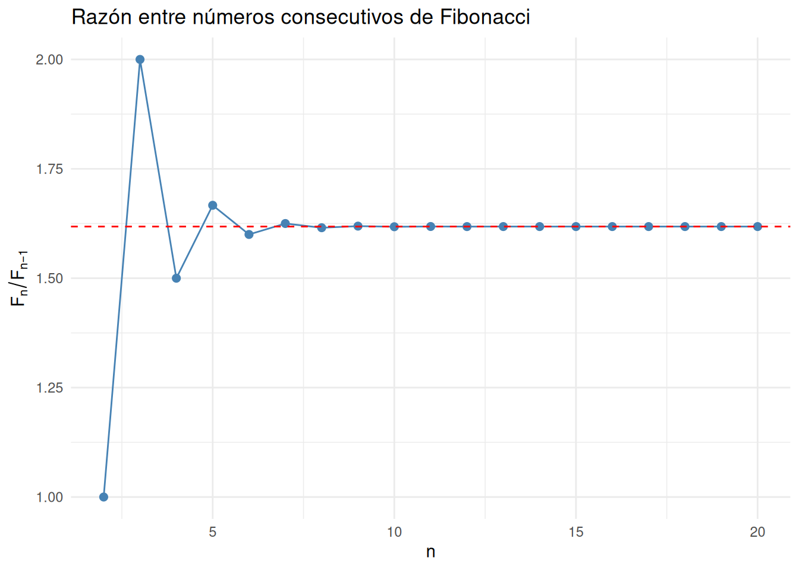

library(ggplot2)fibonacci<-function(n){F<-numeric(n)F[1]<-1F[2]<-1for(iin3:n){F[i]<-F[i-1]+F[i-2]}return(F)}n<-20F<-fibonacci(n)ratio<-F[-1]/F[-length(F)]data<-data.frame(n =2:n, ratio =ratio)phi<-(1+sqrt(5))/2ggplot(data, aes(x =n, y =ratio))+geom_point(color ="steelblue", size =2)+geom_line(color ="steelblue")+geom_hline(yintercept =phi, linetype ="dashed", color ="red")+labs(title ="Razón entre números consecutivos de Fibonacci", x ="n", y =expression(F[n]/F[n-1]))+theme_minimal()

5 EL ALGORITMO DE EUCLIDES
La segunda propiedad se puede demostrar empleando el Algoritmo de Euclides, que es técnica milenaria para encontrar el máximo común divisor (MCD) entre dos números enteros.
Por lo tanto, dos números de Fibonacci consecutivos son siempre coprimos.
7 CONCLUSIÓN
El algoritmo de Euclides proporciona una demostración elegante y alternativa de la coprimalidad de dos términos consecutivos de la sucesión de Fibonacci.
OEIS Foundation Inc., «A000045: Fibonacci numbers: F(n)=F(n-1)+F(n-2), with F(0)=0, F(1)=1», s.f. https://oeis.org/A000045 (accedido 23 de diciembre de 2025).
T. Koshy, Fibonacci and Lucas Numbers with Applications. New York: Wiley-Interscience, 2001.
[7]
R. A. Dunlap, The Golden Ratio and Fibonacci Numbers. Singapore: World Scientific Publishing, 1997.
[8]
I. Niven, H. S. Zuckerman, y H. L. Montgomery, An Introduction to the Theory of Numbers, 5.ª ed. New York: Wiley, 1991.
[9]
K. H. Rosen, Elementary Number Theory and Its Applications, 6.ª ed. Boston, MA: Pearson, 2011.
Notas
Este artículo es una traducción y actualización del post original titulado EUCLINACCI publicado el domingo 1 de febrero de 2009 en el blog Psychedelic Geometry[1].↩︎
Ejecutar el código
---title: "Euclinacci"description: "La sucesión de Fibonacci y el Algoritmo de Euclides"author: 'Enrique Pérez Herrero'date: '2025-06-11'lang: escategories: - R - Fibonacci - Euclid - Mathbibliography: euclinacci.bibnocite: | @*draft: false---## INTRODUCCIÓNUna igualdad aparentemente trivial como $1+1=2$ encierra consecuencias tanprofundas que han ocupado bibliotecas enteras[^1]:Entre ellas destaca la famosa _sucesión de Fibonacci_ [@oeis-fibonacci]:$$\{0, 1, 1, 2, 3, 5, 8, 13, 21, 34, 55, \ldots\}$${#eq-fib001}La sucesión de _Fibonacci_ se define de forma recursiva mediante la siguienteexpresión:$$F_n = \begin{cases}F_0 = 0 \\F_1 = 1 \\F_n = F_{n-1} + F_{n-2}, & \text{para } n \ge 2\end{cases}$${#eq-fib002}## PROPIEDADES FUNDAMENTALESEl análisis de la razón entre términos consecutivos de la_sucesión de Fibonacci_ tiene dos propiedades importantes: 1. La sucesión de razones $\frac{F_{n+1}}{F_n}$ converge a un límite finitocuando $n$ tiende a infinito. 2. Dos números de _Fibonacci_ consecutivosson *coprimos*: $\gcd(F_{n}, F_{n+1}) = 1$.## TABLA DE RAZONES::: {.keep-case}| $n$ | $F_n$ | $\frac{F_{n+1}}{F_n}$ | Error absoluto $\left| \frac{F_{n+1}}{F_n} - \phi \right|$ ||-----|-------|------------------------|-------------------------------------------------------------|| 5 | 5 | 1.6666667 | 0.0486327 || 10 | 55 | 1.6176471 | 0.0003869 || 15 | 610 | 1.6180339 | ≈ 2.7 × 10⁻⁷ || 20 | 6765 | 1.6180339887 | ≈ 1.3 × 10⁻¹⁰ |:::Tabla 1: Convergencia de la razón $\frac{F_{n+1}}{F_n}$ hacia el número áureo$\phi = \frac{1+\sqrt{5}}{2} \approx 1.6180339887\ldots$## LA RAZÓN AUREASea $I$ el límite de la relación entre dos números de _Fibonacci_ consecutivos:$$I = \lim_{n \to \infty} \frac{F_n}{F_{n-1}}$${#eq-fib003}Como:$$\frac{F_{n}}{F_{n-1}} = \frac{F_{n-1}+F_{n-2}}{F_{n-1}} = 1 + \frac{F_{n-2}}{F_{n-1}} (n \geq 2)$${#eq-fib004}Tomando límites se obtiene:$$I = 1 + \frac{1}{I}\Rightarrow I^2 = I + 1\Rightarrow I = \frac{1 + \sqrt{5}}{2} = \phi$${#eq-fib005}El número $\phi$ es conocido como la [proporción áurea](https://es.wikipedia.org/wiki/N%C3%BAmero_%C3%A1ureo).```{r}library(ggplot2)fibonacci <-function(n) { F <-numeric(n) F[1] <-1 F[2] <-1for (i in3:n) { F[i] <- F[i -1] + F[i -2] }return(F)}n <-20F <-fibonacci(n)ratio <- F[-1] / F[-length(F)]data <-data.frame(n =2:n, ratio = ratio)phi <- (1+sqrt(5)) /2ggplot(data, aes(x = n, y = ratio)) +geom_point(color ="steelblue", size =2) +geom_line(color ="steelblue") +geom_hline(yintercept = phi,linetype ="dashed",color ="red") +labs(title ="Razón entre números consecutivos de Fibonacci",x ="n",y =expression(F[n] / F[n -1])) +theme_minimal()```## EL ALGORITMO DE EUCLIDESLa segunda propiedad se puede demostrar empleando el *Algoritmo de Euclides*,que es técnica milenaria para encontrar el máximo común divisor (MCD) entre dosnúmeros enteros.Dados $a$ y $b$, el algoritmo genera la secuencia:$$(a, b) = (r_0, r_1) = (r_1, r_2) = \cdots = (r_{n-1}, r_n)$${#eq-fib006}Con la siguiente relación de recurrencia:$$\begin{cases}r_0 = a \\r_1 = b \\r_{i+1} = r_{i-1} - r_i \cdot \left\lfloor \dfrac{r_{i-1}}{r_i} \right\rfloor\end{cases}$${#eq-fib007}Cuando $r_{i+1} = 0$, entonces $\gcd(a, b) = r_i$ y el algoritmo se detiene.La notación $\lfloor x \rfloor$ corresponde a la denominada _función suelo_[@weisstein-floor] que devuelve el mayor entero menor o igual que $x$## APLICACIÓN A LOS NÚMEROS DE FIBONACCISea:$$(F_n, F_{n-1}) = (r_0, r_1)$${#eq-fib008}Entonces:$$\begin{aligned}r_2 &= F_n - F_{n-1} \cdot \left\lfloor \dfrac{F_n}{F_{n-1}} \right\rfloor \\&= F_n - F_{n-1} \cdot \left\lfloor 1 + \dfrac{F_{n-2}}{F_{n-1}} \right\rfloor \\&= F_n - F_{n-1} \cdot (1 + 0) = F_{n-2}\end{aligned}$${#eq-fib009}Repitiendo el proceso, se obtiene:$$(F_n, F_{n-1}) = (F_{n-1}, F_{n-2}) = \cdots = (2, 1) = 1$${#eq-fib010}Por lo tanto, dos números de _Fibonacci_ consecutivos son siempre _coprimos_.## CONCLUSIÓNEl _algoritmo de Euclides_ proporciona una demostración elegante y alternativade la coprimalidad de dos términos consecutivos de la _sucesión de Fibonacci_.[^1]: Este artículo es una *traducción y actualización* del post originaltitulado *EUCLINACCI* publicado el *domingo 1 de febrero de 2009* en elblog *Psychedelic Geometry* [@psychedelic_geometry_2009].## REFERENCIAS